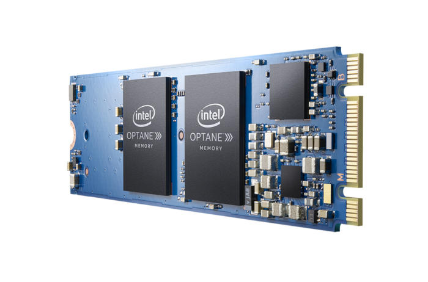

Memorijska Hijerarhija
Brzine poput brzine svijetlosti, ultra-brzo OS bootanje, mali kapaciteti i visoke cijene su aduti koji odlikuju SSD. Tek smo zakoračili s njima u svakodnevni život i možemo reći da su kroz 2015. godinu postali neizostavna komponenta svakog računala. Daleko brži od HDD-a što se tiče random traženja, pisanja i brisanja podataka i to se najviše odlikuje u dizanju operativnog sistema, instaliravanja i pokretanja programa.
Potpuno nova Intelova tehnologija koja kompletno mjenja način pohrane podataka. Oni ju nazivaju kodnim imenom „3D XPOINT “. Iako Intel neželi otkriti materijale i mrežu kako su načinili ovaj produkt, možemo samo reći da Optane ima nekoliko velikih prednosti. Prva od njih je latency. Iako njegov latency nije brz kao i cache memorija ili RAM, ali je puno brži od klasičnih SSD-ova. Također može se koristiti kao RAM cache ili kao pohrana podataka! To mu je omogućio baš ovaj brzi pristup podatcima zbog niskog latency-a i veliki kapacitet. Plus mu je što može držati relativne podatke u sebi puno duže nego RAM, jer mu ne treba konstanta struja da bi radio, a brži je od svih M.2 SSD-a trenutno na tržištu. Pod teškim radom, Optane će i dalje držati svoju konstantnu brzinu i neće popustiti iako ga hranimo velikim ulazom i izlazom iz I/O porta. To će imati značajnu ulogu u serverima i cloud servisima. Trenutno je dostupan u 16/32GB u obliku M.2 2280, za sedmu + (KB s1151 ) generaciju Intelovih procesora. Njegova cache memorija će biti toliko brza da ćete neke stvari sa OS-a ili čak igrica moći spremiti na Optane i kasnije pristupiti njima bez ikakvog problema i čekanja, bez obzira da li imali HDD koji je jako spor.
